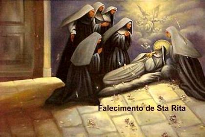
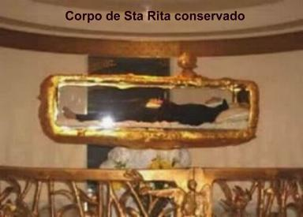

OS �LTIMOS ANOS
O PODER INTERCESSOR DE RITA
Quanto retornou da viagem a Roma estava cansada e silenciosa como nunca. Evitava sair, mas atendia a todos que a procurava no Mosteiro. Nesta �poca aconteceu um milagre que bem real�a o seu poder de intercess�o junto a DEUS. Foi procur�-la uma camponesa desesperada com o estado f�sico da filha, que depois de uma violenta queda, n�o conseguia mais andar. Dizia a m�e:
- �Era uma garota t�o bonita, que n�o me cansava de agradecer a DEUS pelo nascimento dela�. E o pranto n�o a deixava continuar. Rita colocou a m�o suavemente em sua cabe�a. A senhora continuou a falar:
- �Minha filha n�o tem mais for�as, n�o tem mais vontade de viver... Logo morrer�!
Rita balan�ou a cabe�a, n�o concordando com aquela possibilidade e acariciou-lhe os cabelos, dizendo:
- �Voc� precisa ter f�. Eu rezarei por ela, mas voc� precisa ter f�. A mulher concordou, entre l�grimas... Rita acrescentou: �E n�o fale com ningu�m que esteve comigo. Agora v�. Volte para a sua filha�. A mulher fez um sinal de �sim� com a cabe�a, e Rita sorriu. Assim se despediram.
Poucas horas depois, chegando � sua casa, a camponesa viu muitas pessoas reunidas diante da porta da resid�ncia. Deu um grito de susto, temendo que a filha estivesse morta, e correu para l�. No entanto, a menina ria e pulava desembara�adamente, batendo palmas e dan�ando. � medida que a camponesa entrava na sua casa, as pessoas lhe diziam: �Olhe a sua filha�! A garota estava ali no meio de todos, rindo e chorando de alegria. A m�e a chamou alto pelo nome, e ela, virando-se, correu ao seu encontro com movimentos r�pidos, um pouco inseguros como uma crian�a que ensaia os primeiros passos, e disse:
- �Mam�e eu estou bem!... Olhe para mim�!...
Abra�aram-se. Ambas tinham o rosto banhado de l�grimas. Em volta, todos gritavam: �Milagre! Milagre�!
Choveram as perguntas:
- �Aonde voc� foi�? �De onde v�m�? �O que fazia esse tempo todo�?
A mulher transtornada pela irrefre�vel alegria, n�o conseguiu manter segredo e deixou escapar involuntariamente: �Estava com Rita. Ela me prometeu que rezaria por voc�. Minha filha devemos visit�-la e agradecer as ora��es que ela fez e pediu a DEUS por n�s�.
GRAVE DOEN�A
Nos �ltimos quatro anos de vida, de 1453 a 1457, Rita foi acometida por uma terr�vel febre, que a mantinha durante todo o dia deitada, primeiro encima de uma dura esteira pousada sobre a terra, mas, por ordem da Superiora, a esteira foi substitu�da por uma enxerga (colch�o r�stico). Rita ficava im�vel na cama, num estado de dor cont�nua, oportunidade em que seu esp�rito ia para longe, �ia ao Para�so e conversava com os Anjos�. Aqueles anos foram de grande sofrimento, que ela viveu na resigna��o e na serenidade, n�o obstante a dor que a dilacerava e consumia o seu corpo, j� t�o esgotado pelas penit�ncias e jejuns. Mesmo assim, jamais parou de rezar. Durante a sua grave doen�a, uma das parentas de Roccaporena lhe assistiu todos os dias at� a morte. Foi esta parenta que em Janeiro de 1457, Rita manifestou-lhe o desejo de ter uma rosa e dois figos que fossem colhidos na horta de sua ex-casa. Pediu que lhe trouxesse na manh� do dia seguinte.
A parenta, muito embora estivesse c�tica de que fosse encontrar a rosa e os figos naquele inverno rigoroso, em Roccaporena, mas se dirigiu � ex-horta da Santa e com grande espanto viu no roseiral coberto de neve uma espl�ndida rosa vermelha, e bem pr�xima, na despojada figueira, dois belos frutos maduros. Com carinho e cuidado colheu-os, e no dia seguinte levou-os para Rita, que alegre e feliz cheirou e beijou a rosa e saboreou os dois figos.
Em mem�ria ao prod�gio da rosa, no atual Mosteiro de Santa Rita, perto de sua cela, existe em C�ssia um vi�oso roseiral que durante quase todo o ano floresce perfumadas rosas vermelhas. Este roseiral foi transportado daquela horta em Roccaporena para o Mosteiro.
MORTE E GL�RIA
Aos 77 anos de idade, no fim do m�s de Maio, Rita partiu para a esplendida e eterna primavera de sua vida no definitivo encontro com o SENHOR. Na biografia de 1628, as suas coirm�s, assim descreveram a sua morte: �Aproximava-se a hora da feliz passagem, quando lhe apareceu NOSSO REDENTOR com sua SANT�SSIMA M�E, convidando-a para o Para�so. Donde ela, toda feliz, depois de pedir e receber todos os sacramentos se apressou a deixar o mundo. Seu debil�ssimo corpo, consumado pelo jejum e penit�ncias, no pobre e pequeno leito, estava acomodado e toda ela se fixava nas contempla��es das coisas celestes, e assim, deleitosamente repousou no SENHOR, e subitamente, os sinos das Igrejas tocaram por si mesmos. Rita morreu num s�bado, dia 22 de Maio de 1457�.
Conta a tradi��o, que n�o apenas os sinos de Santa Maria Madalena, mas tamb�m os das in�meras Igrejas e Torres de C�ssia repicaram festivos, e os habitantes locais acorreram ao Mosteiro para venerar os restos mortais, dos quais emanava um agrad�vel perfume, enquanto a chaga do estigma na fronte dela emitia uma v�vida luz. No dia seguinte realizou-se o ritual f�nebre, oportunidade em que por intercess�o da monja agostiniana, DEUS fez os primeiros milagres, de uma s�rie intermin�vel que dura at� nossos dias.
Reza a tradi��o que o primeiro milagre de Rita, depois da morte, foi do artes�o Cicco B�rbaro. Foi ele quem fez o primeiro �f�retro�, chamado humilde por sua confec��o modesta. Ele era conhecido das irm�s do Mosteiro e tinha feito diversos trabalhos para elas, inclusive conhecia a Irm� Rita. Mas em face de uma paralisia nas m�os, parou de trabalhar. Como n�o havia ningu�m na Igreja com aptid�o para fazer o �f�retro�, ele se apresentou para ajudar de alguma maneira. Por isso, cheio de pesar se aproximou para tomar as medidas da Santa, tocando de leve na veste de Rita. E ent�o, neste momento aconteceu o milagre! Ficou curado instantaneamente.
O culto a Santa Rita de C�ssia, que foi canonizada pelo povo antes da conclus�o do processo can�nico, refulgiu com particular esplendor em 1628, quando o Papa Urbano VIII a proclamou Bem-Aventurada e aprovou a Santa Missa pr�pria em sua honra. A Beata Rita foi Canonizada em 24 de Maio de 1900 pelo Papa Le�o XIII, que a definiu como �a p�rola preciosa da �mbria�.
No dia 22 de Maio de cada ano, Santa Rita � comemorada em todas as partes com solenes manifesta��es religiosas. Sua devo��o se espalhou pelo mundo e cresceu de maneira admir�vel em face da quantidade impressionante de milagres, de todos os tipos, que DEUS realiza atrav�s de sua eficaz intercess�o. � denominada �Santa dos imposs�veis� e atualmente somou outro t�tulo, sendo considerada �a Santa de todos� , porque atende aos pedidos e clamores de todos aqueles que necessitam da prote��o Divina.


GRA�A PARA QUATRO FRATRICIDAS
H� um testemunho no processo can�nico que demonstra como naquela �poca era normal em C�ssia os jovens se sentirem em condi��es de ter de matar uns aos outros, sem outra sa�da, por motivos bem mais f�teis que a obriga��o de vingar o pai assassinado, conforme determinava a lei da Republica de C�ssia. O caso descrito a seguir, � enumerado entre os milagres operados por DEUS, por intercess�o de Santa Rita de C�ssia, depois da sua morte.
Durante o processo de Beatifica��o de Rita surgiu para depor um dos irm�os Benaccursio de Roccaporena, com 76 anos de idade e filho de Giacomo e Ippolita. Diante dos Ju�zes ele teria que responder 28 perguntas e a primeira delas, era se Rita tinha existido mesmo. Respondeu Benaccursio dizendo saber que Rita tinha existido de fato, �por ter ouvido de meus antepassados, e em particular de meu pai, que estava com quase 95 anos de idade�. A vig�sima pergunta do question�rio referiu-se aos milagres atribu�dos a Rita, ele respondeu: �Eu sei que a beata fez milagres tanto em vida, quanto depois de morta, e a mim em particular, j� que, tendo nossa fam�lia quatro irm�os e havendo uma divis�o de heran�a a fazer, existia pouca conc�rdia entre os quatro, que nos transformou em homens irados, de tal forma que est�vamos sendo for�ado a n�s matar mutuamente, por causa da heran�a. Cada um ambicionava mais que o outro. Para evitar essa terr�vel trag�dia em fam�lia, recorri � referida Beata com devo��o, suplicando-lhe se dignasse ajudar a fazermos a divis�o em paz. E ent�o, por gra�a da referida Beata, ela alcan�ou para n�s a miseric�rdia Divina, e dividimos a heran�a com respeito, sem que houvesse briga entre n�s�. Como demonstra��o de agradecimento, Benaccursio disse ter mandado confeccionar um �ex-voto� , para pendurar ao lado dos outros que existiam no t�mulo da Santa.
Os ju�zes encontraram 216 atestados de f� (ex-voto) semelhantes ao mencionado acima, perto da grade que protegia o t�mulo de Rita. Eram predominantemente tabuletas pintadas com a inscri��o �por gra�a recebida�, representando os acontecimentos milagrosos alcan�ados de DEUS, por intercess�o de Santa Rita. Iluminavam esse repert�rio 95 velas e numerosas l�mpadas votivas.
Para al�m do valor can�nico, o testemunho de Benaccursio demonstra como o homic�dio, naquela �poca e at� mesmo o fratric�dio (assassinato de irm�o por irm�o), podia se tornar em certas situa��es, uma necessidade verdadeira e pessoal, da qual era imposs�vel sair dela, �a n�o ser por um milagre�.
SUCESS�O DOS ACONTECIMENTOS
- No ano de 1457, por iniciativa de Monsenhor Eruli, Bispo de Spoleto, foi feita a primeira verifica��o do corpo de Rita. Foi encontrado incorrupto. A seguir foi deposto no "f�retro solene".
- Em 1626, no dia 19 de Outubro, foi aberto o processo de Beatifica��o de Rita. Em 20 de Outubro, ocorreu a segunda verifica��o do corpo da Santa.
- Em 1628, o Papa Urbano VIII proclamou Rita Bem-Aventurada, ou Beata, e autorizou o seu culto.
- Em Fevereiro de 1703, depois do terremoto do dia 14 de Janeiro, foi feita a terceira verifica��o do corpo da Beata, e ainda desta vez, foi encontrado �ntegro.
- No dia 24 de Outubro de 1745, foi feita a quarta verifica��o do corpo de Rita e a transfer�ncia dele para uma urna nova.
- No dia 24 de Maio de 1900, Rita � proclamada Santa, pelo Papa Le�o XIII, que a denominou "a p�rola da �mbria". Sua Santidade tamb�m estabeleceu que a Festa da Santa fosse celebrada anualmente em toda Igreja, no dia 22 de Maio.